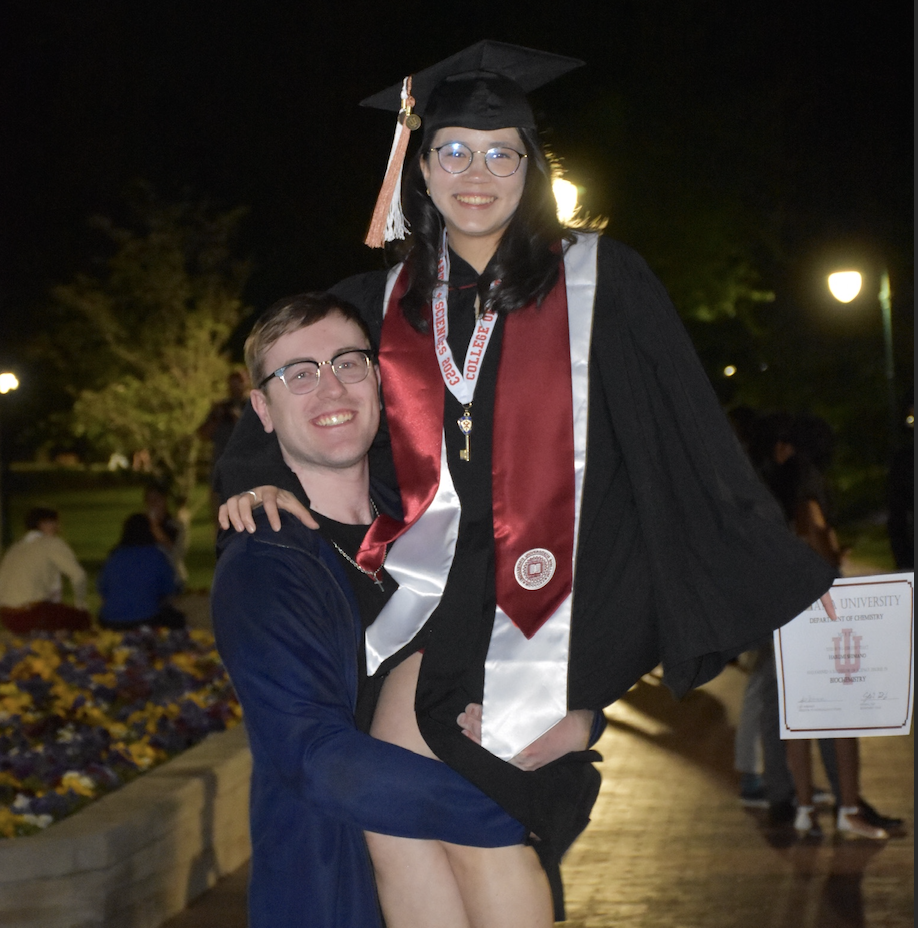

私の物語

家族は私の最も大切な宝物です。私は日本で愛情に満ちた家庭に生まれ、日本人の父とアメリカ人の母と一緒に、2人の兄姉とともに育ちました。
両親は、私たちの二文化のアイデンティティを育む上での重要な役割を果たしました。
私たちは日本の学校に通いながら、家庭では英語に浸りました。故郷で文化的なイベントに参加するだけでなく、両国の祖父母を訪ねる際に、両方の世界を最善の形で経験する努力がされました。
幼い頃から、両親は自分達の情熱を私に紹介してくれました。
バイオリニストである母は、私がバイオリンを持てるようになった頃から弾き方を教え始めました。
私は公共的な演奏を避ける傾向がありますが、バイオリンを弾くことは私の生活の中で深く愛される一部となっており、バイオリンを学ったことから長時間集中する力が付きました。

父は医師として、私が幼い頃から医学的な知識を共有していました。
父は子供の理解力を過小評価しない方法でさまざまな仕組みの説明をし、私の好奇心を育みました。
私は最終的に医者になる道を選ばなかったものの、父との日頃の会話から科学的な概念を理解したいと思う欲望が生まれました。
兄弟姉妹と私の間には年齢差がありますが、彼らはいつも日常行事に私も含めるために努力しました。
その結果、多くの人は数年歳を重ねてからでは経験しない日頃の出来事を見守る機会がありました。
彼らは私に必要な生活のスキルを共有し、どんなに厳しい課題に立ち向かう方法を教えてくれました。
今は地球の反対側に住んでいても、彼らは私の最も親しい友達の中でもっとも親しい存在です。

もともと私の「おとなしい」性格は、小学校初等部の頃から形成され始めました。
多様性が限られている場で育ったため、目立つことはしばしばネガティブな結果をもたらすことを幼い頃から覚えました。
これが一歩引いて生活を観察することを好むようになる原因となりました。
少しは自分の殻から出てきましたが、私の「おとなしい」性格を弱点だけだとは考えていないです。それはむしろ、しばしば見落とされがちな細部に気付ける強みとしても役に立っていると思います。
私の考え方を形成する上での鍵となる瞬間は中高に通っている時でした。
80人という小さなクラスでは、個性を受け入れ困難な時でも自分の情熱を追求することを大事にしていました。
これは、非伝統的な道を進むことを意味しても、私が愛することを全力で追求する情熱をかき立てました。
私が興味を持つ分野でより多くの機会がある世界に行く原動力となりました。

インディアナ大学での学問の旅は生物学への興味から始まりました。
しかし、生物学に対する愛着がすぐに化学への情熱へと導き、最終的に専攻を生化学に変更するという刺激的な決断をすることになりました。
途中で、コンピューターサイエンスへの好奇心を満たすため、それを第二の学位として追加しました。
パンデミックの中で1年以上の大学生活を送りながらも、私は様々な学問的および社交的な活動に関与し続けました。
私は、生化学とバイオインフォマティクスの研究に取り組むことで自分のスキルを拡張しました。
さらに、スペシャルオリンピックスの体操アシスタントコーチや、化学クラブ、そしてラテン系ダンスグループ「Paso a Paso」など、さまざまなクラブに参加することで視野を広げました。
この素晴らしい人生の旅から多くの一生の友達を作り、その中には旅の一歩一歩を共に歩んでくれた私の婚約者にも出会えました。
現在、私は日本で家族と大切な時間を過ごせる機会を利用して、学業から一休みしています。私は熱心に、大学院の学業を追求し、人生の新たな章に進むことを楽しみにしています。